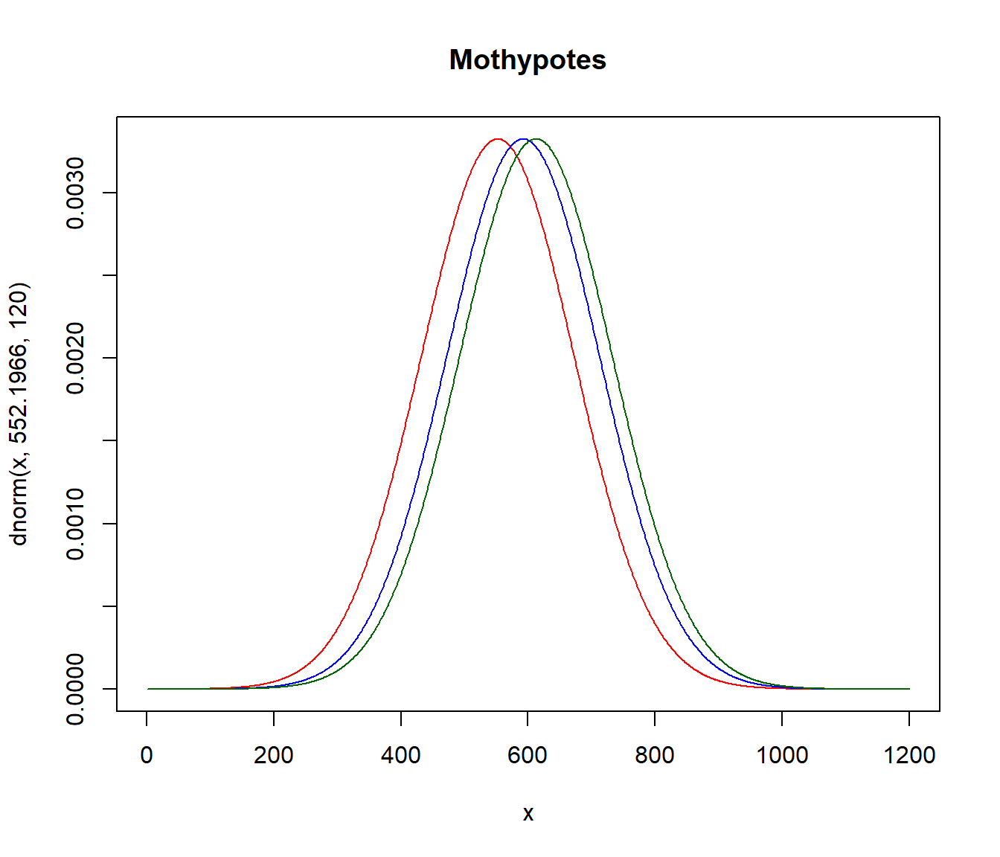

Kapitel 6 Tabeller och figurer
En figur kan vara ett diagram, ett foto, en skiss. När tabeller ger detaljer, så är syftet med figurer att förmedla en övergripande uppfattning om det vi studerar. Man måste alltid ställa sig frågan om en figur är nödvändig eller om den enbart kopierar information som finns i en tabell. En bra figur kan leda till en lång diskussion förkortas. Dessutom, eftersso figurerna ofta är det som läsaren av en vetenskaplig artikel eller en rapport först ser är det viktigt att figurerna är välgjorda.
R ger tillgång till omfattande möjligheter gällande datavisualisering. Dels ger basversionen i R stora möjligheter, dels finns det paket (exempelvis ggplot2 och lattice) som ger ytterligare funktionalitet. När vi ska skapa en figur är det viktigt att veta det primära syftet med figuren utifrån två alternativ:
- Figurer primärt avsedda för en intern analys, dvs för dataanalytikern och andra involverade i analysen. Syften kan till exempel vara att studera data explorativt vid tvätt av data, kontrollera att förutsättningar är uppfyllda vid analyser eller förmedla preliminära resultat. Estetiska och pedagogiska aspekter hos sådana figurer är inte av någon större vikt. Däremot måste naturligtvis figurerna på ett korrekt sätt representera data.
- Figurer avsedda att presenteras ëxternt, dvs figurer som presenteras i en rapport, vetenskaplig artikel eller ett bildspel. En sådan figur ska på ett tydligt och korrekt redovisa det väsentliga i en analys. Den ska även vara estetiskt fullgod. Dessutom måste figuren vara sparad i ett format som fungerar för det medium det ska publiceras i.
Beroende på syfte tar det olika lång tid att skapa figurer. Det kan vara bra att veta att även figurer avsedda för enbart internt bruk kan, om de är komplicerade, ta flera timmar att skapa. Dessutom kan det ta ännu fler timmar för att få data i ordning för att skapa figuren.
Vi kan klassificera figurer enligt fyra kategorier:
- Ok.
- Oestetisk, men korrekt.
- Dålig, innebär att figuren är svårtolkad men principellt korrekt.
- Felaktig.
Vi illustrerar dessa kategorier av figurer genom att skapa fyra figurer. Läs in data conscriptiondata1000.csv som utgör ett OSU på 1000 observationer från INSARK.
# Läs in data
df <- read.csv2("D:/Dropbox/RintroA5/data/conscriptiondata1000.csv")
# Skapa kategorier av poängen på Test A
df$testa_cat[df$testa < 10] <- 1
df$testa_cat[(df$testa >= 10) & (df$testa < 20)] <- 2
df$testa_cat[(df$testa >= 20) & (df$testa < 30)] <- 3
df$testa_cat[(df$testa >= 30)] <- 4
df$testa_cat <- factor(df$testa_cat)
# Skapa ett tabellobjekt
freqtable_testa <- table(df$testa_cat)Den första figuren är OK eftersom den redovisar stapeldiagramen utan felaktigheter.
# OK figur
barplot(freqtable_testa,
col="lightblue",
main="OK",
ylab="Antal",
xlab = "Poäng test A",
ylim=c(0,5000),
border="white",
names.arg = c("0-9", "10-19", "20-29", "30-40"))
Den andra figuren har oestetisk beträffande färgval och har hjälplinjer som löper över staplarna istället för bakom.
# Oestetisk figur
barplot(freqtable_testa,
main="Oestetisk",
col=c(4,7,5,2),
xlab = "Poäng test A",
ylab="Antal",
ylim=c(0,5000),
border="white",
names.arg = c("0-9", "10-19", "20-29", "30-40"))
abline(h = c(0, 1000, 2000, 3000, 4000, 5000), lwd = 2)
Figuren som klassas som dålig är korrekt, men det är svårt att urskilja detaljer i den. Dessutom är namnen på kategorierna otydliga och kan förväxlas med poäng.
# Dålig figur
barplot(freqtable_testa,
main="Dålig",
col="lightblue",
ylab="Antal",
xlab = "Poängkategori test A",
ylim=c(0,20000),
border="white")
Den felaktiga figuren visar staplarna, men det finns ingen information som gör figuren möjlig att tolka.
# Felaktig figur
barplot(freqtable_testa,
main="Felaktig",
col="lightblue",
ylab="",
xlab = "Test",
ylim=c(0,10000),
border="white",
xaxt='n',
yaxt='n')
Notera att distinktionen oestetisk-dålig-felaktig är flytande. Att ha olika färger på staplar innebär att tolkningen av innebär att läsaren kan föranledas att tro att det ytterligare information som inte finns. En korrekt figur som är dålig, kanske är så dålig att den kan misstolkas vilket innebär att den egentligen är felaktig.
6.1 Typer av figurer
6.1.1 Presentation av aggregerade data
Aggregerade data (summor, antal, medelvärden, andelar) presenteras ofta i
- stapeldiagram, där R använder funktionen barplot().
- punktdiagram, där R använder funktionen dotchart().
I princip redovisas grafiskt värden presenteras i en tabell, men en grafisk presentation blir enklare att avläsa. På grund av relationen mellan stapeldiagram och tabeller används i R ett skapat tabellobjekt i stapeldiagramsfunktionen barplot för att skapa stapeldiagram.
Det finns olika typer av stapeldiagram.
Det finns lite riktlinjer
proptable_psych <- prop.table(freqtable_psych)
Error in prop.table(freqtable_psych): object 'freqtable_psych' not found
freqtable_psych_year <- table(factor(df$testa_cat), df$year_cat)
Error in table(factor(df$testa_cat), df$year_cat): all arguments must have the same length
barplot(freqtable_psych_year, beside=TRUE, ylab="Antal")
Error in barplot(freqtable_psych_year, beside = TRUE, ylab = "Antal"): object 'freqtable_psych_year' not found
proptable_psych_year <- 100*prop.table(freqtable_psych_year, margin = 2 )
Error in sweep(x, margin, margin.table(x, margin), "/", check.margin = FALSE): object 'freqtable_psych_year' not found
barplot(proptable_psych_year, beside=TRUE, ylab="Procent (%)")
Error in barplot(proptable_psych_year, beside = TRUE, ylab = "Procent (%)"): object 'proptable_psych_year' not foundSome key rules for table layout are the following:
Do not use vertical lines. Do not use horizontal lines between data rows. (Horizontal lines as separator between the title row and the first data row or as frame for the entire table are fine.) Text columns should be left aligned. Number columns should be right aligned and should use the same number of decimal digits throughout. Columns containing single characters are centered. The header fields are aligned with their data, i.e., the heading for a text column will be left aligned and the heading for a number column will be right aligned.
6.2 Lådagram
Lådagram används främst när vi ska jämföra fördelningar uppdelat på kategorier. Att använda lådagram för en enda variabel är inte optimalt, utan histogram ger då mer information.
Vi vill studera testresultat uppdelat på psykologisk bedämning
 ## Histogram
Histogram används för att visualisera en kontinuerlig variabel. Funktionen hist() skapar ett histogram. Nackdelen med histogram är att den är känslig för antalet klasser. Testa därför olika antal klasser.
## Histogram
Histogram används för att visualisera en kontinuerlig variabel. Funktionen hist() skapar ett histogram. Nackdelen med histogram är att den är känslig för antalet klasser. Testa därför olika antal klasser.
par(mfrow = c(2,2))
hist(df$gripstrength, xlab="Greppstyrka (Newton)", ylab="Antal", breaks=7, main="7 klasser")
hist(df$gripstrength, xlab="Greppstyrka (Newton)", ylab="Antal", breaks=14, main="14 klasser")
hist(df$gripstrength, xlab="Greppstyrka (Newton)", ylab="Antal", breaks=28, main="28 klasser")
hist(df$gripstrength, xlab="Greppstyrka (Newton)", ylab="Antal", breaks=56, main="56 klasser")
6.3 Spridningsdiagram
Den vanligaste funktionen i R för att skapa figurer är plot. Det finns många argument och i de närmaste obegränsade möjligher att anpassa figurerna

6.4 Cirkeldigram
R-manualen avråder från cirkeldiagram.


- Det finns om man vill se om en grupp kategorier överstiger en andel (t ex 50%)
- Don’t use pie charts.
- If you find yourself unable to follow #1, keep in mind the challenges with pie charts: if relative sizes are important, you’ll need to include data labels. Also be aware of impact of color on 2D space (darker looks larger); don’t let your tool decide your color scheme.
6.5 Några frekvent förekommande diagram.
I surveydata stöter vi ofta på uppdelade stapeldiagram. Dessa figurer har en inneboende problem eftersom kategorierna storlek kan vara svåra att relatera till varandra. Samtidigt är de en visualisering som gör det enkelt att jämföra fördelningar för många variabler av typen attitydfrågor. För att illustrera kategoriserar vi testresultat på begåvningstesterna i INSARK enligt nedanstående schema.
df$testa_cat <- NA
df$testa_cat[df$testa < 10] <- 1
df$testa_cat[(df$testa >= 10) & (df$testa < 20)] <- 2
df$testa_cat[(df$testa >= 20) & (df$testa < 30)] <- 3
df$testa_cat[(df$testa >= 30)] <- 4
df$testa_cat <- factor(df$testa_cat)
df$testb_cat <- NA
df$testb_cat[df$testb < 10] <- 1
df$testb_cat[(df$testb >= 10) & (df$testb < 20)] <- 2
df$testb_cat[(df$testb >= 20) & (df$testb < 30)] <- 3
df$testb_cat[(df$testb >= 30)] <- 4
df$testb_cat <- factor(df$testb_cat)
df$testc_cat <- NA
df$testc_cat[df$testc < 10] <- 1
df$testc_cat[(df$testc >= 10) & (df$testc < 20)] <- 2
df$testc_cat[(df$testc >= 20) & (df$testc < 30)] <- 3
df$testc_cat[(df$testc >= 30)] <- 4
df$testc_cat <- factor(df$testc_cat)
df$testd_cat <- NA
df$testd_cat[df$testd < 10] <- 1
df$testd_cat[(df$testd >= 10) & (df$testd < 20)] <- 2
df$testd_cat[(df$testd >= 20) & (df$testd < 30)] <- 3
df$testd_cat[(df$testd >= 30)] <- 4
df$testd_cat <- factor(df$testd_cat)
Likert_table <- 100*cbind( prop.table( table( df$testd_cat) ),
prop.table( table( df$testc_cat) ),
prop.table( table( df$testb_cat) ),
prop.table( table( df$testa_cat) ) )
colnames(Likert_table) <- c("Testa D", "Test C", "Test B", "Test A")
bar1 <- barplot(Likert_table, horiz = TRUE,
col = c("brown3", "brown1", "cadetblue1", "cadetblue4"),
xlab="Procent (%)", las=1)
abline(v=50)
legend("top", fill = c("brown3", "brown1", "cadetblue1", "cadetblue4"),
legend = c("Kategori 1", "Kategori 2", "Kategori 3", "Kategori 4"),
horiz = TRUE, inset = c(0,-0.1), xpd = TRUE, bty="n")
barplot(Likert_table, horiz = FALSE, beside=TRUE,
col = c("brown3", "brown1", "cadetblue1", "cadetblue4"),
xlab="Procent (%)", las=1)
legend("top", fill = c("brown3", "brown1", "cadetblue1", "cadetblue4"),
legend = c("Kategori 1", "Kategori 2", "Kategori 3", "Kategori 4"),
horiz = TRUE, inset = c(0,-0.1), xpd = TRUE, bty="n")
6.6 Export av figurer
6.7 Export av tabeller
Övning 5.1
- Installera paketet MASS som innehåller funktioner som kan vara användbara senare på kursen.
- Aktivera det installerade paketet MASS.